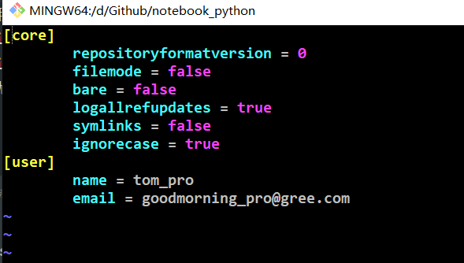
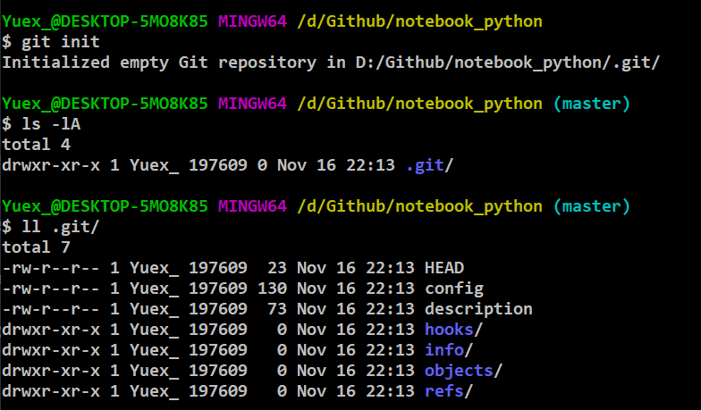

Git 教程
1. 配置
使用git前，我们需要配置一下两个属性name和email，这两个信息会用来在存储代码时记录用户的身份。可以直接在命令行中通过指令来设置：
形式
用户名：tom Email地址：goodmorning@gree.com作用：区分不同开发人员的身份
辨析：这里设置的签名和登录远程库（代码托管中心）的账号、密码没有任何关系。
命令
- 项目级别/仓库级别：仅对当前本地库范围内有效
- git config user.name tom_pro
- git config user.email goodmorning_pro@gree.com
- 系统用户级别：登录当前操作系统的用户范围
- git config --global user.name "tom_pro"
- git config --global user.email "goodmorning_pro@gree.com"
- 级别优先级：就近原则，项目级别优于系统用户级别

- 项目级别/仓库级别：仅对当前本地库范围内有效
2. Git命令行操作
- 命令：初始化命令，git init
- 效果：生成 .git 文件夹

- 注意：.git 目录中存放的是本地库相关的子目录和文件，不要删除，也不要随意修改。
3. 基本操作
查看状态：
- git status 查看工作区、暂存区状态
添加操作：
- git add [file name] 将工作区的“新建/修改”文件添加到暂存区 git rm --cached [file]... 将文件从暂存区删除
提交操作：
- git commit -m "commit message" [file name] 将暂存区文件内容提交到本地库
查看历史记录：
- git log 命令显示从最近到最远的提交日志
- git log --pretty=oneline
- git log --oneline
- git reflog 显示移动到历史版本的步数
版本回退： 我们要把当前版本回退到上一个版本，就可以使用git reset命令 （1）基于局部索引值
git reset --hard 1094a(索引值) （2）使用^符合：只能后退一步
git reset --hard HEAD^ 注：一个^符合后退一步，n个^符合后退n步 （3）使用~符合：只能后退
git reset --hard HEAD~n 注：n表示后退n步
4.文件状态
git中的文件有两种状态：未跟踪和已跟踪。未跟踪指文件没有被git所管理，已跟踪指文件已被git管理。已跟踪的文件又有三种状态：未修改、修改和暂存。
暂存，表示文件修改已经保存，但是尚未提交到git仓库。
未修改，表示磁盘中的文件和git仓库中文件相同，没有修改。
已修改，表示磁盘中文件已被修改，和git仓库中文件不同。
可以通过git status来查看文件的状态
简易的命令行入门教程:
1.Git 全局设置:
git config --global user.name "yunzhongyan_01"
git config --global user.email "1252454084@qq.com"
2.初始化git
git status--查看当前仓库的状态；
git init--初始化仓库
git log--查看日志
3.基本操作
未跟踪 —> 暂存（已跟踪）；
git add <filename>git add *将所有已修改（未跟踪）的文件暂存暂存 —> 未修改；
git commit -m "XXX"git commit -a -m "XXX"提交所有已修改的文件（未跟踪的文件不会提交）未修改 —>修改；修改文件后，文件自动变为修改状态。
git restore <filename> # 恢复文件，重置文件到最新提交的状态
git restore --staged <filename> # 取消暂存状态
git rm <filename> # 删除文件
git rm <filename> -f # 强制删除
还需要执行git commit -m "XXX"，才能实现真正的删除
git mv from to # 移动文件 重命名文件
4.分支
创建 git 仓库:
mkdir git_test
cd git_test
git init
touch README.md
git add README.md
git commit -m "first commit"
git remote add origin https://gitee.com/yuex_w1992/git_test.git
git push -u origin master
已有仓库?
cd existing_git_repo
git remote add origin https://gitee.com/yuex_w1992/git_test.git
git push -u origin master
重新登录账号
git config --system --unset credential.helper
# 强制提交
git push -u origin master -f